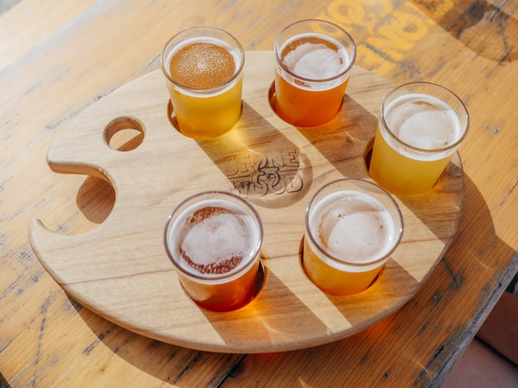
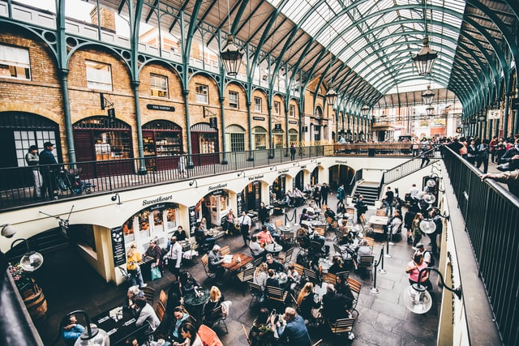

9 avril
Dîner gastronimique découverte

Participez au tout dernier évènement organisé par Chef Club - au programme, un dîner gastronomique spécial découverte aux côtés des plus grands chefs 👨🍳 de la capitale. Attention places limitées.
17 avril
Dégustation de bières artisanales
Rejoinez-nous dimanche 17 avril dans le rayonnant Café ☀️ Soleil, pour une dégustation d'une sélection de 20 bières artisanales 🍺 réalisée par nos experts.
4 mai
Opening : middle food market
C'est l'ouverture la plus attendue de l'année 📆 Middle market ouvre ses portes mercredi 4 mai !
🍴 Venez découvrir 20 stands spécialisés dans la cuisine européenne.